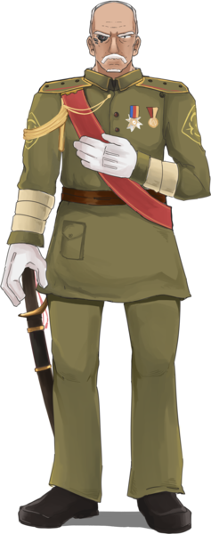

佐久間龍哉 さくま りゅうや
- 性別
- 男
- 年齡
- 76 歲
- 生日
- 8 月 5 日
- 身高
- 183 cm
- 體重
- 因為身體多是義肢所以很重
- 性格
- 平常宛如隔壁和藹可親的老伯，算計起來異常狠辣
人稱鐵血總督，在和國內以鐵腕處理硒瑟魯人事件著名
原本在經歷各場對硒瑟魯戰爭之後
便以養傷為名暫時回和國休息
但在下任總督安東元二郎意外死亡後便隨即復任總督
人稱鐵血總督，在和國內以鐵腕處理硒瑟魯人事件著名
原本在經歷各場對硒瑟魯戰爭之後
便以養傷為名暫時回和國休息
但在下任總督安東元二郎意外死亡後便隨即復任總督
大和帝國陸軍軍官學校畢業生
曾經參與過第一次世界大戰以及和羅戰爭
在洛國戰場以及羅莎莉亞戰場樹立不少軍功
是大和帝國優秀的陸軍軍官
雖然認真工作，但平常仍然會抽空閱讀、寫點東西
喜歡閒來無事時一邊喝著手沖茶、一邊閱讀莎翁的劇本
大和帝國陸軍軍官學校畢業生
是在學校成績比佐藤還優秀的學長
曾經一度是學校中的風雲人物之一
但畢業後卻突然杳無音訊
多年之後，佐藤才在帝國的最南――夜楠，與三綺重逢
看似神秘、無法親近的他
卻有著一個平凡的夢想――在老家開一家早餐店

夜北高校可愛動物研究部部長
同時是毛絨絨喫茶（モフモフ喫茶）的社長
所到之處不知道為什麼會跟著很多的狗狗
為了照顧那群趕不走又很可愛還越來越多的汪醬
只好穿起女給的裝扮，成為喫茶店社長賺錢

來自赫曼的富二代
因為爺爺留下來的日誌而決定前往夜楠
現在是夜楠高校教的赫曼語老師，定居在夜北滬水港
與榭兒結婚，並過著安穩的日子，直到那一天……

從硒瑟魯部落來到夜北的少女
定居在繁華的滬水港
就這麼悄悄渡過了六年光陰
與艾瑞斯修成正果，但卻在某天失去了音訊……
棠硯的哥哥，與棠硯同住於烘山角的祖厝
曾前往動盪的漢國求取復活死者的技術，成為道士
揉合西方「解析機關」的研究中一戰成名，取得降衣等級
但自從與妹妹團聚後
人生的目的只剩下寵愛妹妹而已……
墨槿的妹妹，與兄長同住在烘山角的祖厝
對照顧兄長特別有興趣，時常搶走家中僕役的工作
因為慣用手是擁有怪力的義肢而對粗活相當得心應手
在被兄長問到「有啥物想欲得的物件無？」時
答道「想欲去上學」

醉潭尋常小學校四年梅組的學生
醉潭街市「滸清皮鞋」老闆的女兒
總是帶著書在身上閱讀、散發著療癒氣息的女孩
雙眼嚴重弱視的關係，戴著一副可以調整度數的眼鏡
憧憬為他製作眼鏡的雪谷醫生
醉潭尋常小學校四年梅組的學生
外表看似和風美人
其實是個十足的野孩子，總是靜不下來
但意外地擅長需要大量專注力的弓道
家裡是做茶葉生意的富商，住在醉潭溪左岸的西式別墅
與右岸醉潭市場的南蓮是從小在一起的玩伴
霜月家的大小姐，也是霜月家的下任當家
在製作蒸汽儀器和編寫魔素迴路上有著極高的成就
是相當優秀的蒸汽師，實力足以和一個中隊匹敵
清家是他少數可以溝通的對象，也常以捉弄清家為樂
以技術人員的身分來到夜楠協助軍隊
穗乃的護衛，霜月家的養子
在劍術和魔法方面都表現得相當傑出
但礙於養子身分只能作為穗乃的護衛
對穗乃完全忠心，卻常被自家小姐耍著玩
因為過往的經驗，不太能對他人敞開心房
出生在巴蘇圖頭目家，現任頭目的妹妹
祖傳的寶石藏在媽媽的遺物──山茶花首飾裡，從不離身
自認行為瘋瘋癲癲，男孩子氣，但莫名的追求者挺多
在襲擊部落的流行病中不幸中標
在病床上不忘逗哥哥和朋友開心
傳唱於硒瑟魯人古老傳說中的祭司
有人說他的出現將會帶來災厄
有人說他的出現是豐收以及富饒的預兆
在風雲將起的夜楠
那抹神秘的倩影、飛揚的紅髮再次出現在眾人面前
他的再臨，將會為夜楠帶怎麼樣的變化？